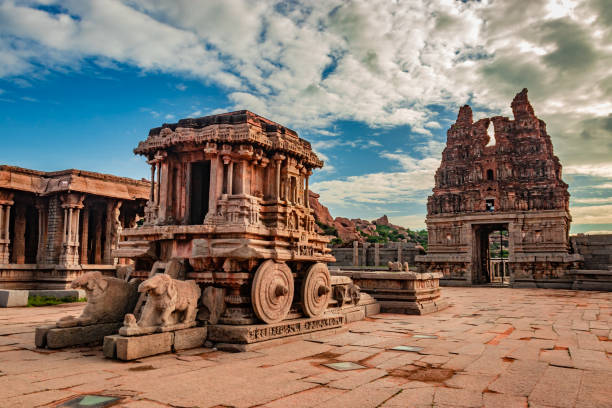
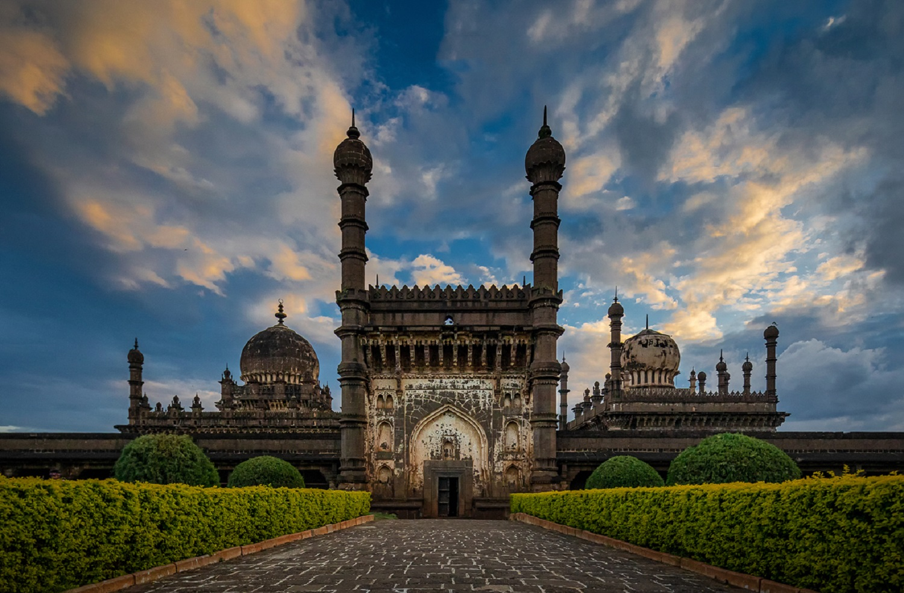
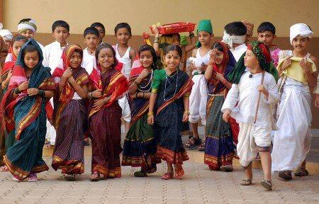
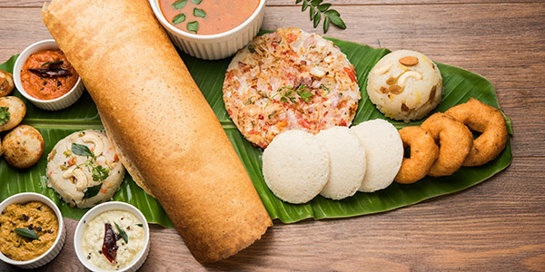

| ✧ Aspect | Information |
|---|---|
| ✧ Capital | Bengaluru |
| ✧ Chief minister | Basavaraj Bommai |
| ✧ Largest City | Bengaluru |
| ✧ Districts | 30 |
| ✧ Official Language | Kannada |
| ✧ Other Language | Urdu, Konkani, Marathi, Tulu, Tamil, Telugu, Malayalam, Kodava and Beary. |
| ✧ Population | Approximately 68 million |
| ✧ Area | 191,791 square kilometers |
| ✧ Major Rivers | Kaveri, Tungabhadra, Krishna |
| ✧ Major Industries | Information Technology, Biotechnology, Aerospace, Textiles |
| ✧ Popular Places | Mysore Palace, Hampi, Jog Falls, Coorg |
Traditional Dresses in Karnataka includes the Panche (Dhoti), Angi or Panche (Shirt), and Mysore Peta for men, while for women, it includes the Saree. Traditional attire is still widely worn during festivals and special occasions.
Karnataka, located in the southern region of India, has a diverse and ancient history. The land has been inhabited since ancient times, with evidence of Neolithic and Indus Valley Civilization settlements.
The early history of Karnataka witnessed the rule of dynasties such as the Kadambas, Western Gangas, and Chalukyas, who contributed significantly to the region's culture and architecture. The Chalukyas, in particular, left a lasting legacy with their temple architecture.
The medieval period saw the rise of the mighty Vijayanagara Empire, which dominated South India for centuries. The empire's capital, Hampi, is now a UNESCO World Heritage Site known for its architectural ruins and rich history.
Karnataka also played a crucial role in the development and spread of Jainism and Buddhism during ancient times. It was a center of learning and culture, attracting scholars and traders from across the world.
With the arrival of European powers like the Portuguese, Dutch, and British, Karnataka witnessed significant political changes. The British eventually established their control over the region, leading to the integration of Karnataka into British India.
After India gained independence in 1947, Karnataka became a part of the Indian Union. Over the years, the state has emerged as a major center for technology, education, and culture, contributing significantly to India's growth and development.



